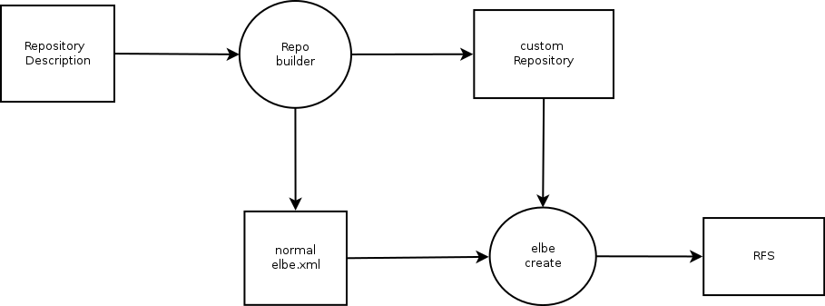
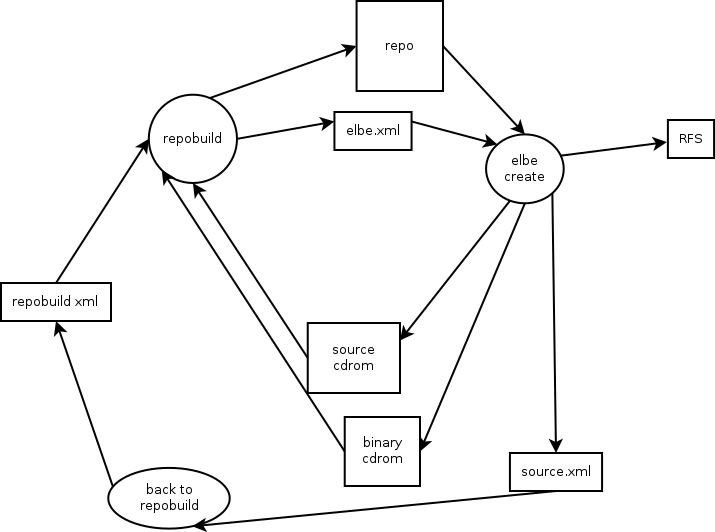

Simplification
Lets consider the buildenv.img and the communication into it
an implementation Detail first, and only describe the user visible
interface.
In order to separate the step of compiling Software from the binary RFS build,
we propose the repobuild tool.
It consists of a daemon in the buildenv and a client on the host machine.
repobuild should be able to parse an xml File containing
build instructions.
Something along these lines:
<repository> <distro>wheezy</distro> <name>testrepo</name> <signwith keyid="ABCDABCD"/> </repository> <pkg-list> <git branch="devel/torbenh" repo="git://xyz.de/git" /> <svn repo="blabla" /> <kernel branch="devel/torbenh" repo="git://xyz.de/git" config="bla_defconfig" /> <uboot branch="devel/torbenh" repo="git://xyz.de/git" config="bla_defconfig" /> <localfiles dir="/path/to/source" /> </pkg-list>
My basic idea would be, that repobuild accepts a superset of the xsd that elbe create accepts.
The user would run the following:
repobuild simple-repobuild.xml
This would communicate with the buildenv and trigger the build of the specified packages.
These packages are then injected into the specified repo.
The tool should also be able to rewrite the pkg-list entries to <pkg>, and add the
repo to the source repos.
So that this output can then be fed into elbe create.

If the target has apt we can just apt-get upgrade on the target after repobuild.
A tool should be easy to create, that can convert the source.xml from source cds
into a repobuild xml.
If builddeps also get onto binary CDs we might even tag the from-source stuff.
And we might only need to rebuild what we want.

We might want to have a wizzard tool, that streamlines debianisation of source dirs ?
simplified dh_make ?
own mako templates ?
eclipse integration ?
Manut seems to know more than i do ;)
We already have the soapexec client.
We can sync directories into the buildenv.
buildd needs wanna-build which isnt packaged :S
sbuild should be enough ?
Handling of small patches ?
handling of dependencies ?
How to handle rebuild without version bumps ? (Added repobuild version)
repobuild blocks until build is complete ?
repobuild sends email ?